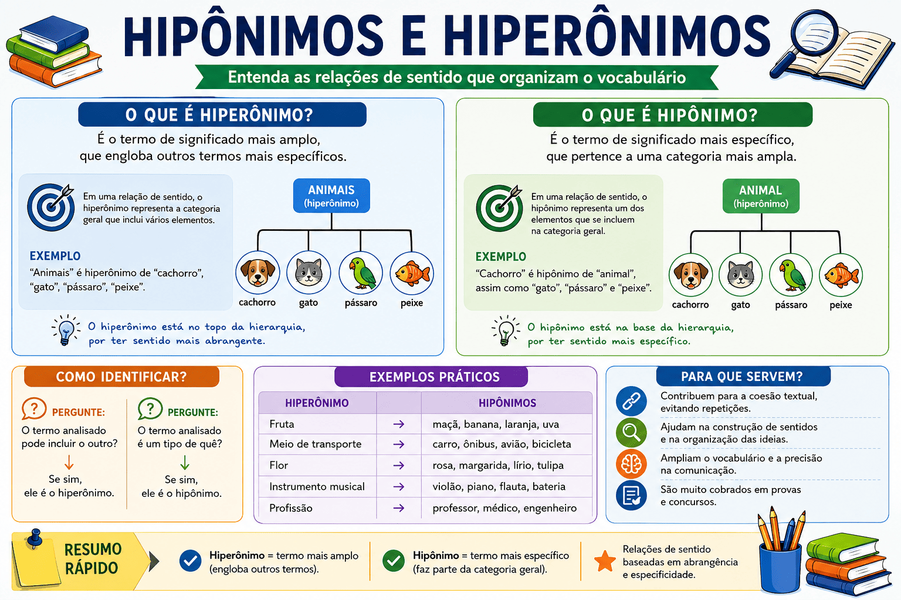

Hipônimos e Hiperônimos: conceitos, diferenças, exemplos e como identificar
Os hipônimos e hiperônimos são palavras ou expressões que estabelecem entre si uma relação de sentido baseada na ideia de especificidade e abrangência. Enquanto o hiperônimo apresenta um significado mais amplo, o hipônimo apresenta um significado mais específico dentro de determinada relação semântica.
Essas relações estão presentes constantemente na comunicação. Quando alguém afirma que comprou uma fruta e depois especifica que comprou uma maçã, por exemplo, estabelece uma relação semântica entre os dois termos: “fruta” possui sentido mais amplo, enquanto “maçã” representa uma espécie específica desse conjunto.
Neste conteúdo, você aprenderá o que são hiperônimos e hipônimos, compreenderá a diferença entre esses conceitos, verá exemplos práticos, conhecerá as relações de sentido entre palavras e entenderá como esses recursos podem contribuir para a coesão textual, a progressão das ideias e a resolução de questões de interpretação, vestibulares e provas como ENEM e PAES.

O que são hiperônimos?
O hiperônimo é uma palavra ou expressão que apresenta um significado mais amplo em relação a outro termo. Ele pode abranger diferentes elementos pertencentes a uma mesma categoria ou campo semântico.
Em uma relação entre “animal” e “cachorro”, por exemplo, animal é o hiperônimo porque possui um significado mais abrangente. Cachorros pertencem ao conjunto dos animais, mas o termo “animal” também pode incluir gatos, cavalos, aves, peixes e muitos outros seres.
Mariana adotou um cachorro. O animal recebeu todos os cuidados necessários.
- cachorro: termo mais específico;
- animal: termo mais amplo;
- relação: “animal” é hiperônimo de “cachorro”;
- efeito textual: o termo “animal” permite retomar “cachorro” sem repetir exatamente a mesma palavra.
Hiperônimo é o termo de sentido mais amplo que engloba outro termo de significado mais específico.
O que são hipônimos?
O hipônimo é uma palavra ou expressão que apresenta sentido mais específico em relação a outro termo de significado mais amplo. Ele representa um elemento pertencente a uma categoria maior.
Na relação entre “fruta” e “banana”, por exemplo, banana é um hipônimo de “fruta”, pois designa um tipo específico de fruta.
A feira estava cheia de frutas. As bananas estavam maduras.
- frutas: categoria mais ampla;
- bananas: elemento específico dessa categoria;
- relação: “banana” é hipônimo de “fruta”;
- efeito textual: a segunda frase especifica um dos elementos pertencentes à categoria apresentada anteriormente.
Hipônimo é o termo de sentido mais específico que pertence a uma categoria representada por um termo mais amplo.
Qual é a diferença entre hiperônimo e hipônimo?
A diferença fundamental está na abrangência do significado. O hiperônimo apresenta um sentido mais amplo, enquanto o hipônimo apresenta um sentido mais específico.
| Aspecto | Hiperônimo | Hipônimo |
|---|---|---|
| Significado | Mais amplo | Mais específico |
| Abrangência | Engloba outros elementos | Está incluído em uma categoria maior |
| Exemplo | Animal | Cachorro |
| Outro exemplo | Fruta | Maçã |
| Função textual possível | Retomar ou generalizar uma informação | Especificar ou detalhar uma informação |
Hiperônimo
```O cachorro correu pelo quintal. O animal parecia muito agitado.
“Animal” possui significado mais amplo e inclui “cachorro”.
```Hipônimo
```O animal entrou no quintal. O cachorro começou a correr.
“Cachorro” possui significado mais específico dentro da categoria “animal”.
```Como funciona a relação entre hiperônimos e hipônimos?
A relação pode ser compreendida como uma organização hierárquica de significados. Um termo mais amplo pode conter diferentes termos específicos, que, por sua vez, podem apresentar níveis ainda mais específicos.
animal
↓
mamífero
↓
cachorro
↓
poodle
Nesse esquema, “animal” apresenta uma abrangência maior que “mamífero”; “mamífero” apresenta abrangência maior que “cachorro”; e “cachorro” apresenta abrangência maior que “poodle”.
Por isso, uma mesma palavra pode funcionar como hiperônimo em uma relação e como hipônimo em outra. “Cachorro”, por exemplo, é hipônimo de “animal”, mas pode funcionar como hiperônimo de “poodle” quando a comparação considera esses dois termos.
Atenção: hiperônimo e hipônimo não são propriedades absolutas de uma palavra. A classificação depende da relação semântica estabelecida entre os termos analisados.
Exemplos de hiperônimos e hipônimos
| Hiperônimo | Hipônimo | Relação |
|---|---|---|
| Animal | Cachorro | Cachorro é um tipo de animal. |
| Fruta | Maçã | Maçã é um tipo de fruta. |
| Flor | Rosa | Rosa é um tipo de flor. |
| Veículo | Automóvel | Automóvel é um tipo de veículo. |
| Instrumento musical | Violão | Violão é um tipo de instrumento musical. |
| Profissão | Professor | Professor é uma profissão específica. |
| Esporte | Futebol | Futebol é um tipo de esporte. |
| Móvel | Cadeira | Cadeira é um tipo de móvel. |
Hiperônimos e hipônimos não são sinônimos
Um erro frequente é considerar que hiperônimos e hipônimos são simplesmente sinônimos. Embora possam participar de estratégias de substituição e retomada textual, as relações semânticas são diferentes.
Sinônimos são palavras que apresentam significados iguais ou próximos em determinado contexto. Já hiperônimos e hipônimos estabelecem uma relação de abrangência e especificidade.
Sinonímia
```O professor iniciou a aula. O docente apresentou o conteúdo.
“Professor” e “docente” apresentam sentidos próximos no contexto.
```Hiperonímia
```O professor chegou à escola. O profissional iniciou a atividade.
“Profissional” apresenta sentido mais amplo que “professor”.
```Assim, uma palavra pode substituir outra sem ser seu sinônimo. A substituição pode ocorrer por meio de uma relação de sentido mais ampla ou mais específica.
Hiperônimos e hipônimos na coesão textual
As relações de hiperonímia e hiponímia podem contribuir para a coesão referencial. Ao utilizar um termo mais amplo para retomar uma palavra anteriormente apresentada, o autor pode evitar repetições e manter a continuidade temática.
Mariana comprou um cachorro. O animal foi levado ao veterinário no dia seguinte.
Nesse exemplo, “animal” é hiperônimo de “cachorro”. A expressão retoma o referente anterior sem repetir exatamente a mesma palavra.
Esse tipo de retomada é especialmente importante na produção textual porque permite variar a forma de apresentação de um referente. A página de referência também apresenta os hiperônimos como recurso capaz de evitar repetições e contribuir para a continuidade do texto.
cachorro → animal
termo específico → termo mais amplo
hipônimo → hiperônimo
Hiperônimos como recurso de generalização
O uso de um hiperônimo pode produzir um efeito de generalização. Em vez de repetir ou destacar um elemento específico, o autor pode utilizar uma categoria mais abrangente.
João comprou um notebook. O equipamento será utilizado durante as aulas.
“Equipamento” apresenta sentido mais amplo e pode funcionar como hiperônimo em relação a “notebook”. A substituição permite retomar o referente sem repetir o mesmo substantivo.
Observe que a escolha do hiperônimo deve ser adequada ao contexto. Nem toda palavra semanticamente mais ampla produzirá uma retomada eficiente. É necessário que o leitor consiga identificar claramente o referente.
Hipônimos como recurso de especificação
Enquanto o hiperônimo pode generalizar uma informação, o hipônimo pode ser utilizado para especificar um elemento apresentado anteriormente.
A escola promoveu uma atividade cultural. A apresentação teatral reuniu muitos estudantes.
“Atividade cultural” apresenta uma categoria mais ampla, enquanto “apresentação teatral” especifica uma possibilidade dentro desse conjunto.
Esse recurso pode contribuir para a progressão textual porque o texto parte de uma informação mais geral e acrescenta posteriormente uma informação mais específica.
informação geral → informação específica
atividade cultural → apresentação teatral
Hiperonímia, hiponímia e progressão textual
As relações entre termos mais amplos e mais específicos podem contribuir para a progressão textual. O autor pode apresentar inicialmente uma categoria e, em seguida, selecionar um de seus elementos para desenvolver a informação.
A biblioteca recebeu novos livros. As obras de literatura brasileira serão disponibilizadas primeiro aos estudantes.
Na primeira frase, “livros” apresenta uma categoria geral. Na segunda, “obras de literatura brasileira” restringe e especifica o conjunto mencionado anteriormente.
Dica de prova: quando um texto passa de uma categoria geral para um elemento específico, observe se há uma relação de hiponímia. Quando passa de um elemento específico para uma categoria mais abrangente, procure uma relação de hiperonímia.
Hiperônimos e hipônimos em diferentes campos semânticos
A relação entre hiperônimos e hipônimos pode aparecer em diferentes áreas do vocabulário. O importante é identificar a relação de inclusão semântica entre os termos.
| Campo semântico | Hiperônimo | Hipônimos |
|---|---|---|
| Animais | Animal | Cachorro, gato, cavalo, leão |
| Frutas | Fruta | Maçã, banana, manga, laranja |
| Veículos | Veículo | Carro, ônibus, motocicleta, bicicleta |
| Flores | Flor | Rosa, lírio, margarida, orquídea |
| Móveis | Móvel | Mesa, cadeira, sofá, armário |
| Instrumentos musicais | Instrumento musical | Violão, piano, flauta, bateria |
| Esportes | Esporte | Futebol, vôlei, basquete, natação |
Uma palavra pode assumir funções diferentes
Uma mesma palavra pode ocupar posições diferentes em uma cadeia semântica. Isso acontece porque a classificação como hiperônimo ou hipônimo depende do termo com o qual ela está sendo comparada.
animal → mamífero → cachorro → poodle
Nesse encadeamento, “animal” é hiperônimo de “mamífero”, “mamífero” é hipônimo de “animal” e hiperônimo de “cachorro”, enquanto “cachorro” é hipônimo de “mamífero” e hiperônimo de “poodle”.
| Termo analisado | Em relação a um termo mais amplo | Em relação a um termo mais específico |
|---|---|---|
| Animal | — | Hiperônimo |
| Mamífero | Hipônimo de “animal” | Hiperônimo de “cachorro” |
| Cachorro | Hipônimo de “mamífero” | Hiperônimo de “poodle” |
| Poodle | Hipônimo de “cachorro” | — |
Atenção: não classifique uma palavra isoladamente como “hiperônimo” ou “hipônimo”. Primeiro, identifique qual é o termo de comparação e analise qual dos dois possui sentido mais amplo.
Hiperônimos e hipônimos em textos
Em textos mais longos, essas relações podem aparecer como parte de uma cadeia de referências. O autor apresenta um termo, retoma-o por meio de uma categoria mais ampla e depois pode especificar novamente um de seus elementos.
A família adquiriu um veículo novo. O automóvel será utilizado principalmente para viagens. Esse carro possui amplo espaço interno.
- veículo: termo mais amplo;
- automóvel: termo mais específico em relação a “veículo”;
- carro: expressão que retoma o referente apresentado anteriormente;
- efeito textual: as diferentes expressões mantêm a continuidade sem repetir constantemente o mesmo termo.
A construção textual eficiente depende, entretanto, da precisão dessas relações. A substituição deve manter uma conexão compreensível com o referente e não pode introduzir uma generalização tão ampla que torne a referência imprecisa.
Quando o hiperônimo pode ser inadequado?
Embora os hiperônimos sejam úteis para evitar repetições, seu uso nem sempre melhora o texto. Um termo excessivamente amplo pode diminuir a precisão da informação.
Mais específico
```A pesquisadora apresentou um microscópio durante a aula.
A informação identifica precisamente o objeto utilizado.
```Mais amplo
```A pesquisadora apresentou um equipamento durante a aula.
A expressão é possível, mas fornece menos informação específica.
```Portanto, a escolha entre um termo específico e um hiperônimo depende do objetivo comunicativo. Em alguns contextos, a generalização é útil; em outros, ela pode comprometer a precisão.
Quando o hipônimo pode ser inadequado?
O uso de um hipônimo também precisa considerar o contexto. Um termo muito específico pode introduzir uma informação que não foi preparada anteriormente ou que não corresponde ao referente pretendido.
A escola comprou vários materiais esportivos. A bola de basquete será utilizada nas aulas.
A segunda frase especifica um dos materiais esportivos. Entretanto, se o texto não indicar que havia uma bola de basquete entre os materiais comprados, a relação pode exigir informações adicionais para ser plenamente compreendida.
Dica de prova: não analise apenas se uma palavra pertence semanticamente a uma categoria. Verifique também se a relação construída pelo texto é adequada ao contexto.
Hiperônimos e hipônimos na interpretação de textos
Em questões de interpretação, os examinadores podem explorar a relação entre palavras para verificar se o estudante consegue identificar como determinado termo retoma, especifica ou generaliza uma informação.
Uma questão pode, por exemplo, destacar a palavra “animal” em um texto que anteriormente apresentou “cachorro” e perguntar qual é a função ou relação semântica estabelecida.
O menino encontrou um pássaro ferido. O animal estava escondido entre as árvores.
- pássaro: termo mais específico;
- animal: termo mais amplo;
- relação: “animal” é hiperônimo de “pássaro”;
- função textual: retomada do referente sem repetição direta.
Como identificar um hiperônimo?
Para identificar um hiperônimo, procure o termo que apresenta maior abrangência de significado. Uma estratégia prática consiste em perguntar:
“O termo analisado pode incluir o outro termo?”
Se a resposta for positiva, há possibilidade de o termo analisado ser um hiperônimo.
“Fruta” pode incluir “maçã”?
Sim. Portanto, dentro dessa relação, “fruta” é hiperônimo de “maçã”.
- Identifique os dois termos: observe quais palavras estão sendo comparadas.
- Compare a abrangência: determine qual apresenta significado mais amplo.
- Verifique a inclusão: pergunte se o termo mais específico pode ser considerado um elemento da categoria mais ampla.
- Analise o contexto: observe como a relação funciona dentro do texto.
Como identificar um hipônimo?
Para identificar um hipônimo, procure o termo que apresenta maior especificidade em relação a outro termo mais abrangente.
“O termo analisado é um tipo de quê?”
“Maçã é um tipo de quê?”
Maçã é um tipo de fruta. Portanto, “maçã” é hipônimo de “fruta”.
- Localize a categoria: descubra qual termo representa o conjunto mais amplo.
- Procure o elemento específico: identifique qual palavra representa um integrante ou tipo da categoria.
- Teste a relação: formule mentalmente a estrutura “X é um tipo de Y”.
- Considere o contexto: confirme se essa relação faz sentido na construção analisada.
Como diferenciar rapidamente hiperônimo e hipônimo?
Hiperônimo
```É o termo mais amplo.
Exemplo: animal.
Pode incluir cachorro, gato, cavalo e outros.
```Hipônimo
```É o termo mais específico.
Exemplo: cachorro.
É um tipo de animal.
```Memorização rápida: hiperônimo = termo mais amplo; hipônimo = termo mais específico.
Hiperônimos e hipônimos na redação
Na produção de textos argumentativos, hiperônimos e hipônimos podem ajudar a controlar a repetição vocabular e organizar a progressão das informações. O autor pode apresentar uma categoria mais ampla e, posteriormente, especificar elementos relacionados ao tema.
A tecnologia transformou diferentes áreas da sociedade. Na educação, ferramentas digitais passaram a fazer parte da rotina de muitos estudantes.
Nesse exemplo, “tecnologia” apresenta uma categoria ampla, enquanto “ferramentas digitais” restringe o foco para um campo específico relacionado ao argumento desenvolvido.
O recurso deve ser utilizado com equilíbrio. Evitar repetições não significa substituir todas as palavras por termos diferentes. A substituição precisa preservar a precisão e contribuir para a progressão das ideias.
Atenção: uma redação não se torna automaticamente melhor porque utiliza muitas palavras diferentes. A variedade vocabular deve estar subordinada à clareza, à precisão e à construção adequada dos sentidos.
Erros comuns ao identificar hiperônimos e hipônimos
| Erro | Problema | Como evitar? |
|---|---|---|
| Confundir hiperônimo com hipônimo | Inverter a relação de abrangência. | Identifique primeiro qual termo é mais amplo. |
| Considerar que são sinônimos | Ignorar a diferença entre proximidade e inclusão semântica. | Observe se um termo engloba o outro. |
| Analisar a palavra isoladamente | Uma palavra pode assumir relações diferentes dependendo do termo de comparação. | Analise sempre a relação entre os termos. |
| Ignorar o contexto | A relação semântica pode não ser relevante para a construção textual. | Observe a função da palavra dentro do texto. |
| Usar hiperônimos excessivamente | O texto pode perder precisão. | Utilize termos amplos apenas quando a generalização for adequada. |
| Usar palavras muito específicas sem preparação | O leitor pode não compreender de onde surgiu a informação. | Construa relações claras entre as informações. |
Hiperônimos, hipônimos e coesão: comparação
| Recurso | Relação | Exemplo | Possível efeito textual |
|---|---|---|---|
| Hiperônimo | Do específico para o geral | Cachorro → animal | Generalização e retomada |
| Hipônimo | Do geral para o específico | Fruta → maçã | Especificação e detalhamento |
| Pronome | Retomada referencial | Maria → ela | Evita repetição |
| Sinônimo ou expressão equivalente | Proximidade de sentido | Professor → docente | Variação vocabular |
Esses recursos podem atuar conjuntamente na construção da coesão. A escolha depende da relação de sentido que o autor deseja estabelecer entre as informações.
Como os hiperônimos e hipônimos aparecem nas provas?
Em avaliações escolares, vestibulares e questões de interpretação, o conteúdo pode aparecer associado à semântica, coesão textual, referenciação, substituição vocabular e progressão textual.
- identificação do termo mais amplo em uma relação semântica;
- identificação do termo mais específico;
- reconhecimento de relações de hiperonímia e hiponímia;
- análise de palavras responsáveis por retomar informações;
- identificação de efeitos de sentido produzidos pela generalização;
- identificação de efeitos de sentido produzidos pela especificação;
- análise da substituição vocabular;
- reconhecimento de recursos de coesão;
- análise da progressão textual;
- interpretação de relações semânticas dentro do contexto.
Dica de prova: quando encontrar dois termos relacionados, pergunte primeiro: “Qual deles possui significado mais amplo?”. O termo mais amplo será o hiperônimo; o mais específico será o hipônimo.
Resumo: hiperônimos e hipônimos
| Conceito | Definição | Exemplo |
|---|---|---|
| Hiperônimo | Termo de sentido mais amplo. | Animal |
| Hipônimo | Termo de sentido mais específico. | Cachorro |
| Relação | Um termo apresenta maior abrangência que o outro. | Cachorro → animal |
| Função textual | Pode contribuir para retomada, generalização, especificação e progressão. | O cachorro chegou. O animal estava cansado. |
HIPERÔNIMO = mais amplo
↓
HIPÔNIMO = mais específico
Quiz — Hipônimos e Hiperônimos
Quiz — Hipônimos e Hiperônimos
Questão 1 — O que caracteriza um hiperônimo?
Questão 2 — Na relação “fruta → banana”, qual é o hipônimo?
Questão 3 — Em “Mariana comprou um cachorro. O animal foi levado ao veterinário”, a palavra “animal” é:
Questão 4 — Assinale a alternativa que apresenta uma relação de hiperonímia:
Questão 5 — Em “A escola recebeu novos veículos. O ônibus será utilizado pelos estudantes”, a relação entre “veículo” e “ônibus” é de:
Questão 6 — Qual alternativa apresenta corretamente um hiperônimo e um hipônimo?
Questão 7 — Uma das funções dos hiperônimos na construção textual pode ser:
Questão 8 — Em “A biblioteca recebeu vários livros. As obras de literatura brasileira foram organizadas em uma seção específica”, a segunda expressão contribui principalmente para:
Questão 9 — Sobre hiperônimos e hipônimos, é correto afirmar:
Questão 10 — Para identificar corretamente um hiperônimo e um hipônimo, é necessário:
Conclusão
Os hiperônimos e hipônimos estabelecem relações semânticas baseadas na diferença de abrangência entre os significados. O hiperônimo corresponde ao termo mais amplo, enquanto o hipônimo corresponde ao termo mais específico.
A relação pode ser facilmente compreendida por meio de exemplos como animal → cachorro, fruta → maçã e flor → rosa. Em cada caso, o primeiro termo apresenta uma categoria mais abrangente e o segundo representa um elemento específico dessa categoria.
No texto, essas relações podem assumir importante função na construção dos sentidos. Os hiperônimos podem contribuir para a generalização e para a retomada de informações, enquanto os hipônimos podem permitir a especificação e o detalhamento de elementos anteriormente apresentados.
Por isso, compreender hiperonímia e hiponímia não significa apenas memorizar duas definições. É necessário observar a relação entre os termos e a função que eles desempenham no contexto.
Para memorizar: hiperônimo é o termo de sentido mais amplo; hipônimo é o termo de sentido mais específico.
Resumo para revisão
- Hiperônimo: termo de significado mais amplo.
- Hipônimo: termo de significado mais específico.
- Hiperonímia: relação estabelecida entre um termo mais amplo e outro mais específico.
- Hiponímia: relação estabelecida entre um termo específico e um termo mais abrangente.
- Exemplo: animal é hiperônimo de cachorro.
- Exemplo: cachorro é hipônimo de animal.
- Essas relações dependem da comparação entre os termos.
- Hiperônimos e hipônimos não devem ser confundidos com sinônimos.
- Essas relações podem contribuir para a coesão e para a progressão textual.
- Em provas, observe principalmente a ideia de abrangência e especificidade.
Perguntas frequentes sobre hipônimos e hiperônimos
O que é um hiperônimo?
Hiperônimo é uma palavra ou expressão que possui significado mais amplo e engloba outro termo de sentido mais específico. Por exemplo, “animal” é hiperônimo de “cachorro”.
O que é um hipônimo?
Hipônimo é uma palavra ou expressão de significado mais específico que pertence a uma categoria mais ampla. Por exemplo, “cachorro” é hipônimo de “animal”.
Qual é a diferença entre hiperônimo e hipônimo?
O hiperônimo é o termo mais amplo; o hipônimo é o termo mais específico. Na relação “fruta” e “banana”, por exemplo, “fruta” é hiperônimo e “banana” é hipônimo.
Hiperônimo e hipônimo são sinônimos?
Não. Sinônimos apresentam significados iguais ou próximos em determinado contexto. Hiperônimos e hipônimos estabelecem uma relação de abrangência e especificidade.
Uma mesma palavra pode ser hiperônimo e hipônimo?
Sim. A classificação depende da relação analisada. “Cachorro” é hipônimo de “animal”, mas pode ser hiperônimo de “poodle”, por exemplo.
Hiperônimos ajudam na coesão textual?
Sim. Um hiperônimo pode retomar uma palavra ou expressão anteriormente apresentada, evitando repetições e mantendo a continuidade das informações.
Como identificar um hiperônimo em uma questão?
Procure o termo que apresenta significado mais abrangente. Uma estratégia prática é perguntar: “O termo analisado pode incluir o outro?”. Se puder, ele provavelmente funciona como hiperônimo nessa relação.
Como identificar um hipônimo?
Procure o termo mais específico. Uma estratégia útil é formular a pergunta “X é um tipo de quê?”. Se “X” puder ser incluído na categoria representada pelo outro termo, ele funciona como hipônimo.
Conteúdos relacionados
- Concordância e Coesão: escrevendo frases claras e corretas
- Conectivos e Relações de Sentido: guia completo para escrever com clareza
- Orações Coordenadas e Subordinadas: como reconhecer e classificar
- Concordância Verbal e Nominal: regras e casos especiais
- Regência Verbal e Nominal: quando usar “a”, “de” e outras preposições
- Pronomes da Língua Portuguesa: tipos, classificação, exemplos e usos
- Pontuação: sinais, regras de uso, exemplos e exercícios
- Interpretação de texto
- Conteúdos de Gramática
Referências
BECHARA, Evanildo. Moderna gramática portuguesa. Rio de Janeiro: Nova Fronteira.
CUNHA, Celso; CINTRA, Lindley. Nova gramática do português contemporâneo. Rio de Janeiro: Lexikon.
KOCH, Ingedore Villaça. A coesão textual. São Paulo: Contexto.
ILARI, Rodolfo. Introdução ao estudo do léxico: brincando com as palavras. São Paulo: Contexto.
Explore Outros Conteúdos
Continue seus estudos acessando outras seções do site Mestre Kira: